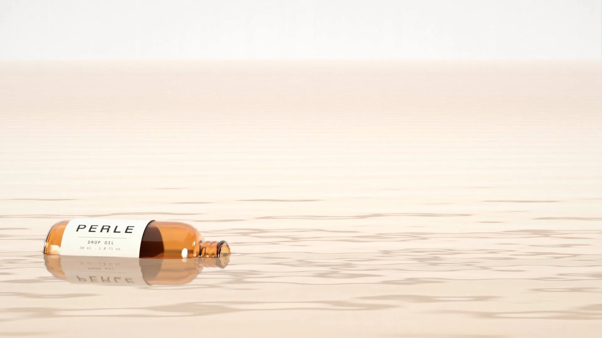

Each oil is set at its share of the formula. Scroll to sink in and meet them one by one.
Squalane52.0%
Rice bran oil30.0%
Camellia seed oil15.0%
Moringa seed oil2.5%
Vitamin E0.5%
Tap the oil for another drop
Each bead is sized by its share of the formula. Shares are illustrative.
Where to buyPerle is sold only through the stores below. Before you order, check that the store name matches exactly; anything else is not us.